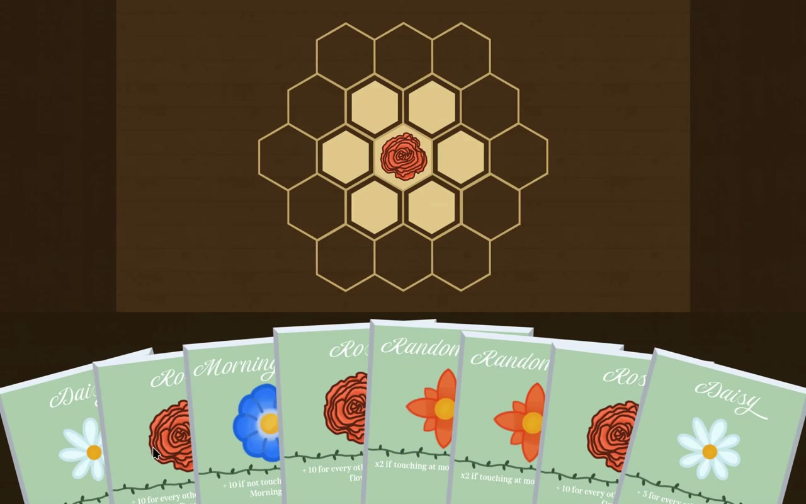

01 / Development
The idea
The game follows an unnamed character who moves to a far-away flower shop to escape the big city and the unsatisfying life they had there. The player gets a chance to meet the townspeople and get to know their personalities, while also trying to uncover their favourite flowers and patterns to create more customer-satisfying bouquets.
I started the game during the final exam period of my high school, which, although exciting and challenging, was quite a stressful period of my life. I want the players to feel the excitement and challenge, but in a calmer and cosier environment than the one I was given.
02 / Development
Why cards & tiles
I picked a card/tile game due to the ease of prototyping. I found it much easier to test my idea by writing down a set of rules and playing it on paper cutouts. I found it very effective to grab one of my friends as the player and act as the computer myself.
Their feedback was very valuable and led to many improved versions of my video game. It also saved me a lot of development time by not having to recode large game logic files whenever the rules took a more drastic change.

03 / Development
The inspirations
The biggest inspiration for this game is Good Pizza, Great Pizza. It’s one of my favourite childhood games and it is how I believe a cosy business simulator should look. That being said, I believe that my unnamed flower shop game still has many differences.
The biggest one comes from the assembly process. The current flower-assembly process is based on adjacency bonuses of different tiles, changing the repetitive pizza making into a more exciting maths scoring challenge.
The adjacency bonus idea comes from Civilization VI, where, depending on where one builds a campus in their city, its science generation could be game-changing, especially during the competitive early game.
04 / Development
Changing the board
The current state of the game is the result of many prototypes. At the very beginning, the flower tile placement board was as big as the screen, but it caused the most optimal bouquets to have a more rectangular shape.
I also didn’t like how the players could spam cheap flowers as a way of satisfying some harsher customers. So I changed it into the current three-ring approach, bringing more strategy into the game, as well as some performance improvements due to the limit on flower tile entities.
05 / Development
Where it is now
I have finished the basic prototype of the game, with the last focus before a Steam demo being the customer interactions. I want to add more specific bouquet requests, friendship values that determine what the customer says, and some background stories for my NPCs.
After that, I’m hoping to have enough for the first version of my Steam demo and to start social media promotion.
06 / Development
Balancing the flowers
The part I’m focusing on most at the moment is balancing the flower types. Everything from abilities and points gained to growth time and seed or ready-flower costs. I find it a bit harder than I originally expected, but I’m making steady improvements.